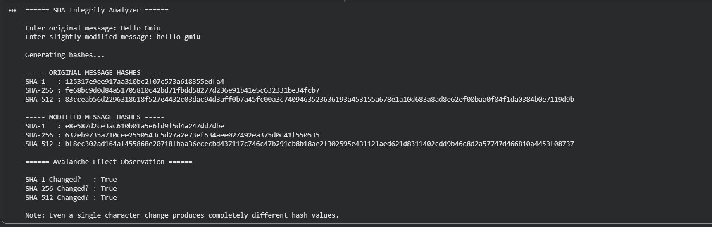

SHA Integrity Analyzer
# SHA Integrity Analyzer
# Compare SHA-1, SHA-256, and SHA-512
# Demonstrates Avalanche Effect
import hashlib
def generate_hashes(message):
message_bytes = message.encode()
sha1 = hashlib.sha1(message_bytes).hexdigest()
sha256 = hashlib.sha256(message_bytes).hexdigest()
sha512 = hashlib.sha512(message_bytes).hexdigest()
return sha1, sha256, sha512
print("====== SHA Integrity Analyzer ======\n")
# Original Message
message1 = input("Enter original message: ")
# Slightly Modified Message
message2 = input("Enter slightly modified message: ")
print("\nGenerating hashes...\n")
sha1_m1, sha256_m1, sha512_m1 = generate_hashes(message1)
sha1_m2, sha256_m2, sha512_m2 = generate_hashes(message2)
print("----- ORIGINAL MESSAGE HASHES -----")
print("SHA-1 :", sha1_m1)
print("SHA-256 :", sha256_m1)
print("SHA-512 :", sha512_m1)
print("\n----- MODIFIED MESSAGE HASHES -----")
print("SHA-1 :", sha1_m2)
print("SHA-256 :", sha256_m2)
print("SHA-512 :", sha512_m2)
print("\n====== Avalanche Effect Observation ======")
print("\nSHA-1 Changed? :", sha1_m1 != sha1_m2)
print("SHA-256 Changed? :", sha256_m1 != sha256_m2)
print("SHA-512 Changed? :", sha512_m1 != sha512_m2)
print("\nNote: Even a single character change produces completely different hash values.")
Output
